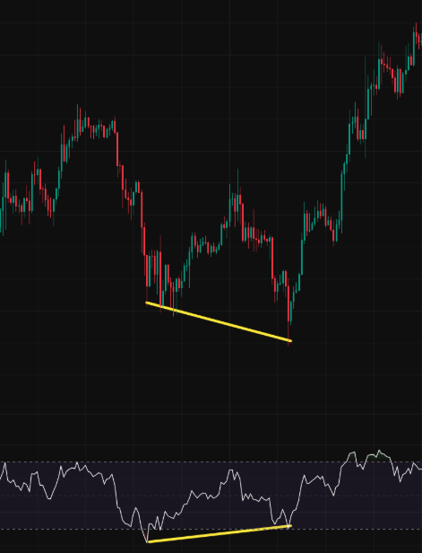
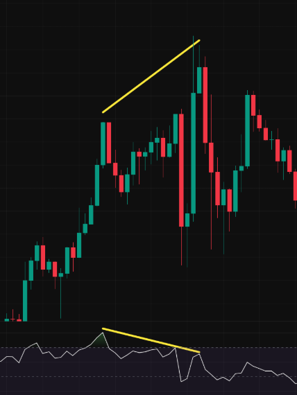
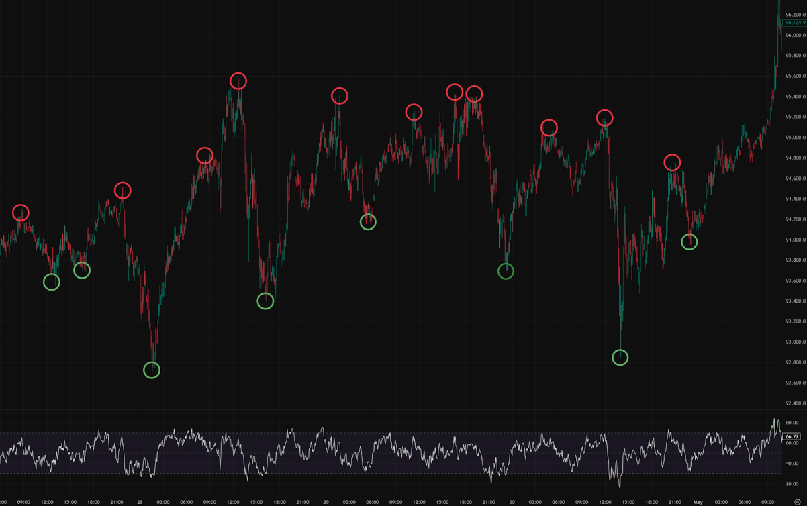
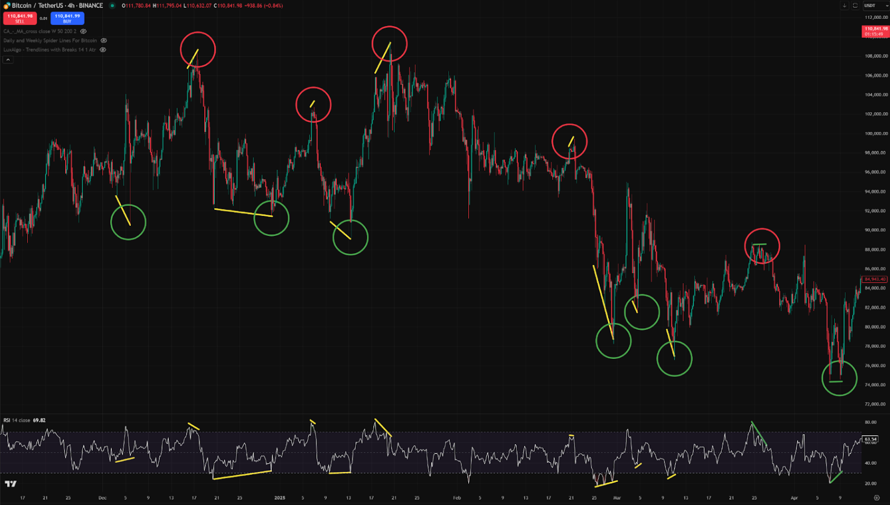
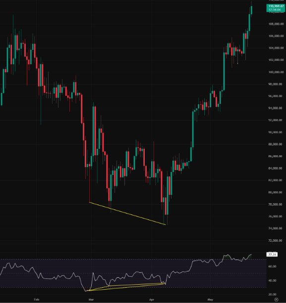

RSI Divergência
Indicador essencial de Bitcoin para lucrar
Indispensável para traders de bilhões de dólares
O que é Divergência RSI?
A Divergência RSI é um indicador bem conhecido. Entre todos os indicadores além de candles e volume, ela é muitas vezes a única usada por traders profissionais que movimentam bilhões. Até os traders mais famosos que usam indicadores sempre prestam atenção na divergência RSI.
Por que a Divergência RSI é importante?
Porque a maioria das reversões de preço vem acompanhada de Divergência RSI.
Embora o surgimento de uma divergência RSI não garanta uma reversão, quase todas as reversões relevantes envolvem divergência RSI. Então, para identificar topos e fundos de reversão (onde o risco-retorno é melhor), você precisa observar a divergência RSI.
No mínimo, os alertas de Divergência RSI sempre disparam logo após o rompimento de um suporte ou resistência. Checar o gráfico apenas nos momentos do alerta pode melhorar bastante sua taxa de acerto e economizar um tempo valioso.
Além disso, os market makers não podem ignorar a divergência RSI. Se você é investidor, é essencial entender esse indicador. Operar sem conhecê-lo dificulta ter lucro consistente, porque você vai perder boas entradas e reversões importantes.
Não é exagero chamar isso de “obrigatório” para traders de Bitcoin. Nem os market makers conseguem enganar a divergência RSI. Operar apenas quando esse sinal aparece reduz perdas e aumenta o lucro.
Por que alguns traders evitam a Divergência RSI?
- Faltam alertas precisos para a divergência RSI. É difícil encontrar sinais que capturem divergências mesmo um pouco fora do topo/fundo. A maioria dos indicadores de divergência TradingView RSI deixa muitos sinais passar.
- Para capturar todos os sinais de reversão, você precisa acompanhar timeframes menores. Porém, mudar timeframes ou os parâmetros de RSI na hora não é fácil na maioria das ferramentas.
- É difícil receber um aviso antecipado antes de a reversão começar.
- A maioria dos apps não permite combinar divergência RSI com outros indicadores ou condições.
- Alertas no celular podem passar batido quando está no silencioso ou inativo. Alertas forçados ou controle de vibração raramente estão disponíveis.
✅ No final deste documento, apresentamos uma ferramenta que resolve todos esses problemas e maximiza o uso da divergência RSI.
Noções básicas de RSI
O RSI (Relative Strength Index) varia de 0 a 100 e indica condições de sobrecompra ou sobrevenda.
Fórmula: RSI = 100 - (100 / (1 + RS)), onde RS = ganho médio / perda média (geralmente em 14 períodos).
- RSI > 70: Sobrecompra
- RSI < 30: Sobrevenda
Em resumo, o RSI mostra a pressão relativa de compra entre os investidores.
O RSI é calculado separadamente para cada timeframe. Por exemplo, o RSI de 5 minutos reflete o movimento de curto prazo, enquanto o RSI de 4 horas mostra tendências mais longas.
O que é “divergência”?
A divergência acontece quando o preço se move na direção oposta à de um indicador (como RSI ou MACD).
Por exemplo, se o preço sobe, mas o RSI cai, isso é divergência.
O que é “Divergência RSI”?
Ela sinaliza uma possível reversão de preço quando a tendência do preço e do RSI se movem em direções opostas.
- Divergência de alta: o preço está caindo, mas o RSI está subindo → a pressão compradora está aumentando → possível reversão para cima
- Divergência de baixa: o preço está subindo, mas o RSI está caindo → a pressão vendedora está aumentando → possível reversão para baixo
Definições técnicas
- Bullish Divergence → Reversal to the upside
- Quando o preço faz um fundo mais baixo, mas RSI faz um fundo mais alto
- RSI está abaixo de 30 (sobrevendido)
{kind=link}

- Bearish Divergence → Reversal to the downside
- Quando o preço faz um topo mais alto, mas RSI faz um topo mais baixo
- RSI está acima de 70 (sobrecomprado)
{kind=link}

Importância nos Futuros de Bitcoin
Durante reversões importantes no Bitcoin, mais de 95% dos timeframes (1m, 3m, 5m, 15m, 30m, 1h, 2h, 4h, 1d) mostram divergência de RSI.
Então, embora a divergência de RSI nem sempre signifique reversão, as reversões quase sempre mostram divergência de RSI.
Exemplos
- No gráfico de 5 minutos de BTC/USDT: a divergência de RSI apareceu em todos os pontos marcados, principalmente nos timeframes de 5 e 3 minutos.
{kind=link}

- No gráfico de 4 horas de BTC/USDT: toda divergência de RSI marcada resultou em movimentos acima de US$ 10.000.
{kind=link}

- No gráfico diário de BTC/USDT: duas divergências de RSI levaram a uma alta de preço de mais de 50% em 2 meses.
{kind=link}

A divergência de RSI não pode ser enganada (Conteúdo avançado)
Picos ou quedas de preço que parecem artificiais muitas vezes são atribuídos aos market makers. Todos os traders assumem que existe algum tipo de controle ou influência.
Mas nem esses players conseguem ignorar a divergência de RSI. Na verdade, muitas vezes eles criam divergência como resultado das próprias ações.
Por quê?
Os market makers conduzem os traders de varejo. As táticas deles:
- Criar picos de preço para acionar FOMO e empurrar o preço acima da entrada deles para vender
- Derrubar o preço para induzir venda por pânico e comprar mais barato
- Fingir que vai bombar o mercado e depois despejar
- Fingir que vai derrubar o mercado e depois acumular
A divergência de alta acontece durante a #2 ou #4; a divergência de baixa, durante a #1 ou #3.
Quando o preço rompe a resistência e aciona stop-losses e compradores atrasados, a divergência costuma se formar conforme o mercado reverte.
Essa dinâmica cria divergência como um subproduto natural da manipulação de mercado.
Como usar a divergência de RSI
A divergência de RSI é melhor usada para operações contra a tendência — comprar perto dos fundos ou vender perto dos topos, buscando uma boa relação risco/retorno.
Mas nem toda divergência deve ser operada. Use junto com outros indicadores, como resistência, linhas de tendência ou níveis de Fibonacci.
Como bons pontos de reversão geralmente mostram divergência de RSI, não conhecer isso significa perder entradas importantes.
Exemplo:
Depois de uma alta repentina, você fica tentado a entrar vendido. Mas quando?
Espere a divergência — mesmo que seja só no gráfico de 1 minuto.
Se a divergência aparecer, é um sinal de que até as baleias estão hesitando em empurrar mais.
Professional traders minimize losses by entering at peak points, and divergence helps them identify those moments.É isso que separa traders lucrativos de investidores que perdem dinheiro.
Até o Warren Buffett disse, famosamente:
"Regra nº 1: nunca perca dinheiro. Regra nº 2: nunca esqueça a Regra nº 1."
Por isso é tão importante manter o stop-loss curto e proteger seu capital.
Quando operar divergência RSI?
- Quando um alerta disparar, analise o gráfico.
- Um alerta significa que um candle anterior rompeu a resistência, ou que uma reversão pode estar começando.
- Mesmo que seja só uma pausa na tendência, vale a pena conferir.
Você não precisa ficar olhando os gráficos o dia todo. Basta configurar alertas de divergência e operar quando eles acontecerem.
Uso avançado:
Se a divergência aparecer, mas o preço romper, isso pode levar a uma tendência ainda mais forte. Isso significa que você pode operar na direção do rompimento depois de confirmar com outros fatores (ex.: padrões no gráfico de 4h).
Princípios-chave
- Divergências em timeframes maiores → reversões maiores
- Confiabilidade por timeframe: 1m < 5m < 15m < 1h < 4h < 1d
- Combine divergência com outros sinais: resistência, Fibonacci, volume, linhas de tendência
- Confira vários timeframes para confirmar força e contexto
- Alertas não significam entrada imediata — eles economizam tempo e destacam entradas com alto risco/retorno
A melhor forma de maximizar a divergência RSI
Use o app DivAlarm:
- Detecta toda divergência mesmo quando os topos dos candles e os topos do RSI não estão alinhados
- Permite ativar/desativar alertas de timeframes específicos a qualquer momento
- Envia alertas enquanto a divergência está se formando (antes de completar)
- Combina com condições: faixas de preço específicas, rompimento da Banda de Bollinger, divergência em outro timeframe
- Permite forçar alertas mesmo no modo silencioso
Com DivAlarm, não é preciso ficar olhando o gráfico o dia todo. Ele avisa você apenas quando sinais críticos acontecem, ajudando até profissionais ocupados a operar com eficiência.
Quer a vantagem mais poderosa no trade de futuros de Bitcoin?
Use alertas de divergência RSI do jeito certo com ferramentas como DivAlarm para operar com mais inteligência, não com mais esforço.